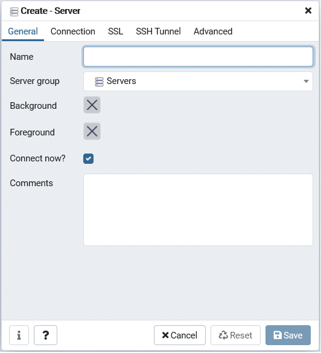

This section describes how to add an instance to be connected to.
Note
If you use a link-local address with version 6 of the TCP/IP protocol, you may encounter the following error when registering the server with pgAdmin. Therefore, do not use link-local addresses.
unsupported format character '"' (0x22) at index 96
In the [Browser] pane, right-click [Servers], and then click [Create] >> [Server].
In the [Create - Server] window, specify a value for each item.

[General] tab
[Name]: Name of the instance to be managed
[Connection] tab
[Host name/address]: Host name or IP address of the server where FUJITSU Enterprise Postgres is installed
[Port]: Port number of the instance
[Username]: User name of the instance administrator
[Password]: Password for the user name specified in [Username]
When you add an instance using pgAdmin, the instance is automatically connected to immediately after the addition is completed.
Note
If you select [Save password], the FUJITSU Enterprise Postgres connection password is stored in the following location. Set the appropriate access permissions for the password file to protect it from unauthorized access.
%APPDATA%\Roaming\pgAdmin\pgadmin4.db